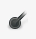

Como es un programa demasiado extenso que daría para hacer solo un manual sobre él vamos a centrarnos en las herramientas más básicas y que más se utilizan, para que puedas empezar a hacer tus propios retoques, el resto, solo consiste en que le dediques tiempo y vayas haciendo tus propios experimentos, esa es la mejor manera de llegar a manejar todas las funcionalidades de este programa.
Vamos a empezar explicándote las utilidades de la Caja de herramientas, de izquierda a derecha, y de arriba a abajo:
Cuadrado y elipse : son herramientas de selección. Una hace una selección de forma cuadrada y la otra con forma de elipse.
Las selecciones en Gimp son muy importantes, ya que delimitan la zona de la foto sobre la que quieres hacer los cambios, así que vas a utilizar mucho estas herramientas de selección.
Para hacer una selección, tienes que hacer clic encima del icono del cuadrado o de la elipse, verás como el ratón añade al puntero la forma del icono, con el resto de las herramientas te pasará igual, luego te colocas en el punto donde quieres empezar la selección, haces clic sin soltar y vas arrastrando y creando la zona de selección. Cuando hayas acabado, suelta el ratón y verás como la zona seleccionada aparece rodeada con rayas discontinuas.
Para quitar esa selección, haces clic con el ratón en cualquier punto fuera de ella.
Puedes seleccionar también la herramienta de selección del cuadrado pulsando la tecla r y la selección de elipse pulsando la e.
El proceso con el resto de herramientas es igual, primero haces clic en el icono y luego aplicas el efecto a la zona que desees.
Lazo : es también una herramienta de selección, que te permite seleccionar una zona dibujada a mano con trazos de líneas rectas. El atajo del teclado para seleccionar esta herramienta es la tecla
f.
Barita mágica : haciendo clic en un punto concreto puedes seleccionar la zona contigua que tenga el mismo color. El atajo del teclado es la tecla
u.
Selección por color : cuando haces clic en un punto determinado te permite seleccionar todas aquellas zonas de la imagen que tengan el mismo color. El atajo del teclado es la combinación de teclas
Mayús+o.
Tijeras : otra herramienta de selección, pero en este caso, las tijeras permiten hacer selecciones con mucha más precisión. Haz clic encima del icono, colócate con el ratón en la parte que quieres seleccionar y ve haciendo clic en los puntos del borde de la selección, observarás que esos puntos se unen de forma automática mediante líneas, ajustándose a los bordes y haciendo una selección más cuidada. El atajo del teclado es la tecla
i.
Selección del primer plano : selecciona una zona que tiene objetos en frente.
Rutas : es una herramienta de selección, de las que más se utilizan. Si haces clic en el icono y luego en una zona de la foto puedes observar que selecciona los puntos cercanos a la imagen. Esta opción es muy útil cuando se quieren aplicar efectos a la zona que rodea al tema principal de la foto. El atajo del teclado es la tecla
b.
Cuentagotas : te permite capturar el color de la zona de la imagen donde haces clic, y a partir de ahí, ese será el color con el que pintarás en el siguiente punto donde hagas clic. Esta herramienta se suele utilizar para retocar fotos en formato papel que tienen algún defecto o doblez. Haces clic con el cuenta gotas en zonas próximas al defecto para captar un color lo más parecido posible, y luego vas haciendo clic encima del defecto y aplicando el color para borrarlo. El atajo del teclado es la tecla
o.
Lupa 
: sirve para ampliar o disminuir la zona que se quiera. Haces clic sobre la imagen y esta se ampliará tantas veces como hagas clic. El atajo del teclado para seleccionar la lupa es la letra
z. Para volver a hacer la imagen más pequeña pulsa
Ctrl+clic.
Compás : se utiliza para medir distancias y ángulos y de esa manera tener medidas más precisas sobre distancias dentro de la imagen. El atajo del teclado es la combinación de teclas
Mayús+m.
Mover : se utiliza haciendo clic con el ratón y sin soltar arrastras aquella capa, selección u objeto que quieras mover. El atajo del teclado es la letra
m.
Alineación : para colocar alineadas capas y otros objetos. El atajo del teclado es la letra
q.
Recorte : permite recortar zonas rectangulares de la imagen. Se usa para quitar zonas del borde de la capa o de la imagen. El atajo del teclado es la combinación de teclas
Mayús+c.
Rotación : para que puedas rotar una capa, selección o ruta hacia la derecha o la izquierda. El atajo del teclado es la combinación de teclas
Mayús+r.
Escalado : te permite redimensionar una capa, selección o ruta tanto de ancho como de alto. El atajo del teclado es la combinación de teclas
Mayús+t.
Inclinación : para inclinar la capa, selección o ruta hacia la derecha o la izquierda. El atajo del teclado es la combinación de teclas
Mayús+s.
Perspectiva : te permite cambiar la perspectiva de una capa, selección o ruta. El atajo del teclado es la combinación de teclas
Mayús+p.
Volteo : esta herramienta te permite voltear una capa, selección o ruta, de manera que los elementos colocados en la parte izquierda de la imagen aparecerán en la parte derecha, o los que estaban arriba, se colocarán abajo. El atajo del teclado es la combinación de teclas
Mayús+f.
Texto : para crear o editar capas en las que se incluya texto. El atajo del teclado es la tecla
t.
Cubeta : es una herramienta que te permite rellenar la zona seleccionada de la foto con un determinado color o patrón. Selecciónala y escoge entre las opciones que aparecen en la parte inferior de la caja de herramientas. El atajo del teclado es la combinación de teclas
Mayús+b.
Mezcla : te permite rellenar la zona seleccionada de la foto pero con un color degradado. Tienes que seleccionar las opciones de degradado y la forma en la parte inferior de la caja de herramientas. El atajo del teclado es la tecla
l.
Lápiz : nos permite dibujar sobre la imagen como si fuera una hoja de papel. Se utiliza para zonas amplias de la foto donde el color es siempre el mismo. El atajo del teclado es la tecla
n.
Pincel : es una herramienta muy parecida al lápiz, pero con el pincel el borde de los trazos es más difuminado. El atajo del teclado es la tecla
p.
Goma de borrar : borra el color de fondo en cada clic de ratón mediante un pincel, cuyo diámetro puedes elegir en las opciones de la parte inferior de la
Caja de herramientas. El atajo del teclado es la combinación de teclas
Mayús+e.
Aerógrafo : provoca el mismo efecto que un aerógrafo de verdad, el trazo se dibuja como si estuviera vaporizado, más difuminado que con el lápiz o el pincel. Cuanto más deprisa te desplaces con el ratón, más vaporizado será el efecto, si lo haces de forma más lenta el trazo será más opaco y denso. El atajo del teclado es la tecla
a.
Tinta : te permite usar una escritura tipo caligrafía. El atajo del teclado es la tecla
k.
Clonado : con esta herramienta puedes copiar a partir de una imagen o diseño original, utilizando un pincel. El atajo del teclado es la tecla
c.
Saneado : se utiliza para corregir irregularidades de la imagen. El atajo del teclado es la tecla
h.
Clonación de perspectiva : te permite copiar desde una imagen de origen después de que hayas aplicado un transformación de la perspectiva.
La gota de agua : es una herramienta de enfoque y desenfoque. Lo que hace es emborronar más o menos, según prefieras, una parte seleccionada de una imagen. El atajo del teclado es la combinación de teclas
Mayús+u.
Emborronado : emborrona las zonas que elijas usando un pincel. El atajo del teclado es la tecla
s.
Quemar : ilumina u oscurece la zona que quieras utilizando un pincel. El atajo del teclado es la combinación de teclas
Mayús+d.
Cada vez que seleccionas una herramienta puedes observar que aparecen, en la parte de abajo de la ventana, las opciones propias de esa herramienta concreta, para que puedas modificar y ajustar los distintos parámetros, del tipo opacidad, pinceles, escala, bordes, enfoque, ajuste, sensibilidad, etc…
Anterior: Entorno de trabajo de Gimp
Siguiente: Añado fotos al Gimp
{kind=link}
{kind=link}
{kind=link}
{kind=link}
{kind=link}
{kind=link}
{kind=link}
{kind=link}
{kind=link}
{kind=link}
{kind=link}
{kind=link}
{kind=link}
{kind=link}
{kind=link}
{kind=link}
{kind=link}
{kind=link}
{kind=link}
{kind=link}
{kind=link}
{kind=link}
{kind=link}
{kind=link}
{kind=link}
{kind=link}
{kind=link}
{kind=link}
{kind=link}
{kind=link}
{kind=link}
{kind=link}